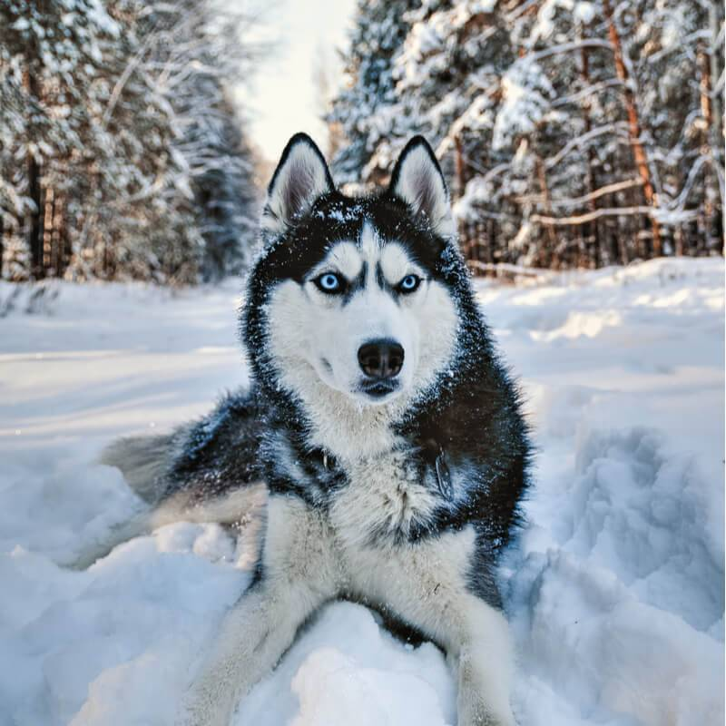

Хаски
Хаски (англ. Husky) — общее название для нескольких пород ездовых собак, выведенных в северных регионах, которые отличаются быстрой манерой тянуть упряжку.Они представляют собой постоянно меняющуюся помесь из самых быстрых собак. Аляскинский маламут, напротив, является самой крупной и самой мощной ездовой собакой, и использовался для более тяжёлых нагрузок. Хотя доставка грузов и людей при помощи собачьих упряжек во многом ушла в историю, в последние годы многие компании предлагают туристам прокатиться на собачьих упряжках в заснеженных регионах.Хаски сегодня содержат как домашних животных.

Хаски википедия